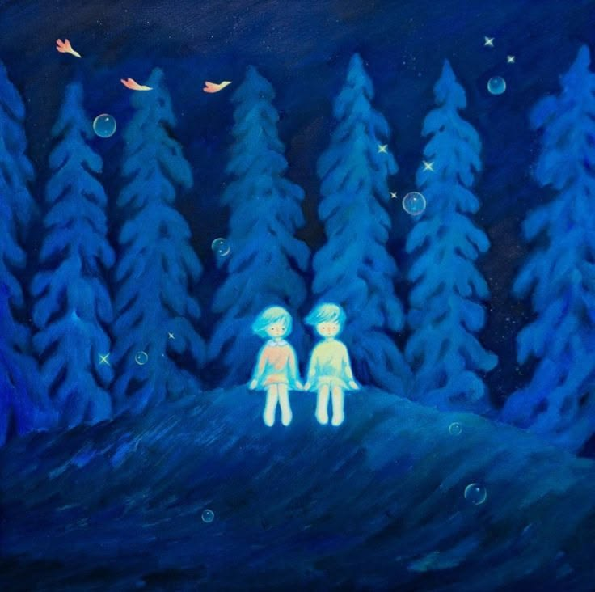

🎶 Songs For You ❤️
pretty
'Cause you're my pretty (Ooh-ooh, ooh-ooh) Definition of beauty (Ooh-ooh, ooh-ooh) Pretty girl, you make everything feel alright Pretty girl, pretty as the stars in the sky Belt of Orion, the way we're aligning And Heaven knows that it breaks my soul, oh-oh-oh When you don't know you're beautiful And I won't let it go, oh-oh-oh I need you to know That you're my pretty (Ooh-ooh, ooh-ooh) Definition of beauty (Ooh-ooh, ooh-ooh) And out of everything I've seen (Everything I've seen) Nothing can compete (Nothing can compete) with you My pretty (Ooh-ooh, ooh-ooh) Yeah, the sun has good taste He's peeking through thе blinders just to get a glimpse of your facе And he traveled quite a ways Ninety million miles to see what I get to see every day, hey Darling, you're beautiful in every single way And there's nothing I'd change, hey My love stays the same 'Cause you're my pretty (Ooh-ooh, ooh-ooh-ooh-ooh) Definition of beauty (Ooh-ooh, ooh-ooh) And out of everything I've seen (Everything I've seen) Nothing can compete (Nothing can compete) with you My pretty (Ooh-ooh, ooh-ooh)
Oh to be loved
Love is patient, love is kind Love is the hardest thing to find 'Cause I thought that I had found it A good thing turned bad and I started to doubt it Now I'm stuck here asking, like What does it take to make it past the passion and stick through the pain? Wondering, is it even out there? 'Til you came in my life and showed me what it's like to be loved [Pre-Chorus] I'll show you [Chorus] What I would do, what I would say The lengths I would go To the measures I'd take to be loved Oh, to be loved by Oh, to be loved by Someone who feels, someone who cares Someone who's simply there Oh, to be loved Oh, to be loved by Oh, to be loved by you [Verse 2] Love is painful, love is hard Love can see beauty through the scars There's an art to the anguish A brawn to the brushstrokes On burgundy canvas No one like you got that Perfect type of love, only from above, nothing like I'm used to, yeah This gon' take some getting used to Eternity could only be the right amount of time To show how much you mean in my life [Pre-Chorus] I'll show you [Chorus] What I would do, what I would say The lengths I would go To the measures I'd take to be loved Oh, to be loved by Oh, to be loved by Someone who feels, someone who cares Someone who's simply there Oh, to be loved Oh, to be loved by Oh, to be loved by you [Outro] Ooh-ooh-ooh Oh, to be loved Oh, to be loved by Oh, to be loved by you Ooh-ooh, yeah Oh, to be loved Oh, to be loved by Oh, to be loved by you
next to you
I was thinkin' maybe we should Runaway to an exhilarating place where everything is in your arms Take a trip inside kaleidoscopic eyes and watch as they reflect the stars Maybe when we fall asleep I'll see you in a dream, ignoring the alarm [Chorus] 'Cause I don't wanna wake up unless I'm right next to you Ooh-ooh-ooh, ooh-ooh-ooh, ooh-ooh I'm right next to you I don't wanna wake up unless I'm right next to you [Verse 1] Wake up, wake up, wake up I don't wanna wake up You look good without no makeup Morning coffee with no k-cup All the energy I need Radiate from your light beams (Ah-ah-ah) If I fall asleep, you'll be in my dreams I don't wanna lеave or let one momеnt pass [Verse 2] Commitment is all that I ask And I'll give you all that I have Put you on and show you off Find myself whenever we get lost Girl, I know that we gon' last And they could laugh But they don't have what we got [Pre-Chorus] I was thinkin' maybe we should Runaway to an exhilarating place where everything is in your arms Take a trip inside kaleidoscopic eyes and watch as they reflect the stars Maybe when we fall asleep I'll see you in a dream Ignoring the alarm [Chorus] 'Cause I don't wanna wake up unless I'm right next to you Ooh-ooh-ooh, ooh-ooh-ooh, ooh-ooh I'm right next to you (Ah-ah-ah-ah-ah) I don't wanna wake up unless (Ooh-ooh) I'm right next to you
i can't help it
'Cause I can't help falling in love with you Pa-pa, pa-pa, pa-da-da-da (Ooh) Pa-pa, pa-pa, pa-da-da-da Pa-pa, pa-pa, pa-da-da-da (Ooh) Pa-pa, pa-pa, pa-da-da-da [Verse] I've been vibin' with you heavy Yeah, I'm fallin', can you catch me? Dreamin' all day and dreamin' all night I could do this the rest of my life I hit these stages like I'm Freddie (Freddie) 'Cause you my queen, I know you ready To grow with me the rest of your life Startin' tonight [Chorus] 'Cause I can't help falling in love with You-ooh, ooh-ooh, ooh You-ooh, ooh-ooh, ooh You-ooh, ooh-ooh, ooh No, I can't help but fall in love with You-ooh, ooh-ooh, ooh You-ooh, ooh-ooh, ooh You-ooh, ooh-ooh, ooh No, I can't help but fall in love [Bridge] It's happening and I can't stop it It's happening and I can't stop it, no Oh, it's happening and I can't stop it Oh, it's happening and I can't stop it, woah [Chorus] 'Cause I can't help falling in love with you No, I can't help but fall in love with You-ooh, ooh-ooh, ooh You-ooh, ooh-ooh, ooh You-ooh, ooh-ooh, ooh Oh, no, I can't help but fall in love with You-ooh, ooh-ooh, ooh You-ooh, ooh-ooh, ooh You-ooh, ooh-ooh, ooh Oh, no, I can't help but fall in love with [Outro] You-ooh, ooh-ooh, ooh You-ooh, ooh-ooh, ooh You-ooh, ooh-ooh, ooh Oh, no, I can't help but fall in love with
this is what forever feels like
Seventeen, I had my first heartbreak and it was terrible And I pray that it won't happen again, but then again, I hope it does Because I wanna fall in love without the part where we give up I wonder if this still exists, I hope it does [Pre-Chorus: JVKE] I wonder what it's like, how it feels to be loved by someone who will never leave I wanna know if you wanna be growin' old with me [Chorus: JVKE] Until we're seventy, dancin' with me Just passin' the time with you right by my side Just stay with me, promise you'll never leave I wanna love you for the rest of my life until we're seventy [Verse 2: Nick Jonas] Baby, I'm so into you I've lived a thousand lives, can't go a single night without you You're more than a feelin', I think I'm ready for the real thing, yeah I want that love, that type of love that's steady The kitchen hugs, sentimental stuff You get me everything I want and need (Everything I want and need) I find it here with you and me, yeah [Pre-Chorus: Nick Jonas] And I wonder what it's like, how it feels to be loved by someone who will never leave I wanna know if you wanna be growin' old with me You might also like Watch the Party Die Kendrick Lamar Best Part Daniel Caesar Sailor Song Gigi Perez [Chorus: JVKE, Nick Jonas, JVKE & Nick Jonas] Until we're seventy, dancin' with me Just passin' the time with you right by my side (By my side) Just stay with me, promise you'll never leave (Never leave) I wanna love you for the rest of my life Until we're seventy, ooh, ooh-ooh [Outro: JVKE, Nick Jonas, JVKE & Nick Jonas] I wanna love you for the rest of my life Until we're seventy Promise you'll never leave (Never leave) I wanna love you for the rest of my life Until we're seventy
this is what falling in love feels like
[Pre-Chorus] Feel like sun on my skin So this is love, I know it is [Chorus] I know it sounds super cliché But you make me feel some type of way This is fallin', fallin' in love Yeah, mm-m-m-mm, yeah [Verse] I got a lot on my mind Got some more on my plate My baby got me looking forward to the end of the day What you say, you and me Just forget about the past, throw it in the trash? What you say, you and me Live the life we never had like we're never going back? [Pre-Chorus] Feel like sun on my skin So this is love, I know it is [Chorus] I know it sounds super cliché But you make me feel some type of way This is fallin', fallin' in love I know it sounds super cliché But you make me feel some type of way This is fallin', fallin' in love (Yeah) This is fallin', falling in love This is fallin', fallin' in love
golden hour
[Verse 1] It was just two lovers Sittin' in the car, listenin' to Blonde, fallin' for each other Pink and orange skies, feelin' super childish, no Donald Glover Missed call from my mother Like, "Where you at tonight?" Got no alibi [Pre-Chorus] I was all alone with the love of my life She's got glitter for skin My radiant beam in the night I don't need no light to see you [Chorus] Shine It's your golden hour (Oh) You slow down time In your golden hour (Oh) [Verse 2] We were just two lovers Feet up on the dash, drivin' nowhere fast burnin' through the summer Radio on blast, make the moment last, she got solar power Minutes feel like hours She knew she was the baddest Can you even imagine fallin' like I did You might also like LET GO Central Cee Bizarrap & Shakira - Shakira: Bzrp Music Sessions, Vol. 53 (English Translation) Genius English Translations Special SZA [Pre-Chorus] For the love of my life? She's got glow on her face A glorious look in her eyes My angel of light I was all alone with the love of my life She's got glitter for skin My radiant beam in the night (Ah) I don't need no light to see you [Chorus] Shine It's your golden hour (Oh) You slow down time In your golden hour (Oh) [Instrumental Outro]
Her
[Intro] (Hold me close) Look me dead in my eyes (Dead in my) 'Til the day that I die (Dead inside) I just wanna feel alive (With you, I'm alive) With you, I'm alive Fell in love, but it left me lonely Tried to trust, but it burned me slowly I didn't know what I was looking for [Chorus] 'Til I found her I found her Without her I'm a mess (I'm a mess) There was nothing 'bout that love that made sense, I was stressed 'Til I found her (Oh, oh) [Verse] I've run for many miles trying to find love From a woman that could love me and nevеr leave my side And I'vе run for many miles trying to get away from The things I'm afraid of and everything inside You say that we're already done (Done) But what does that even mean? You tell me to open my eyes Thank God it was just a dream I guess that's how you know that it's love When you're scared to death they'll leave Just say that you'll never leave, never leave You might also like her (Annika Wells Remix) JVKE & Annika Wells her (Zac Lawson Remix) JVKE & Zac Lawson Mantra JENNIE [Bridge] (Baby, hold me close) Look me dead in my eyes (Dead in my) 'Til the day that I die (Dead inside) I just wanna feel alive (With you, I'm alive) With you, I'm a—, uh Fell in love, but it left me lonely Tried to trust, but it burned me slowly I didn't know what I was looking for [Chorus] 'Til I found her I found her Without her I'm a mess (I'm a mess) There was nothing 'bout that love that made sense, I was stressed 'Til I found her (Oh, oh) Without her I'm a mess (I'm a mess) There was nothing 'bout that love that made sense, I was stressed 'Til I found her (Oh, oh) [Outro] 'Til I found her Ooh-ooh-ooh
for a thousand years
I was a kid looking for love, full of hope inside But time was never kind to me, my heart grew cold as ice All out of luck, thought I was stuck, alone for all my life But I was proven wrong the moment I looked in your eyes [Pre-Chorus: John Michael Howell] It's true, until I'm in the grave Darling, I'll love you [Chorus: John Michael Howell] For a thousand years, dear Time is nothing when I'm here with you, oh-oh-ooh All my fears, tears, those memories, they disappear with you, oh-oh-ooh 'Til I turn into dust, I'll carry this love, my dear For a thousand years [Verse 2: JVKE] Saw very soon, something will bloom, like a lotus flower Thе bluest moon will soon be sun and turn to golden hour Hours and days, lost in your gazе, losing track of time Learning how to slow it down, appreciate our lives [Pre-Chorus: JVKE & John Michael Howell] Just know, until I'm in the grave Darling, I'll love you [Chorus: JVKE, John Michael Howell, Both] For a thousand years, dear Time is nothing when I'm here with you, oh-oh-ooh All my fears, tears, those memories, they disappear with you, oh-oh-ooh 'Til I turn into dust, I'll carry this love, my dear For a thousand years [Bridge: ZVC, ZVC & John Michael Howell] Oh-ooh, ayy Set it all on fire, let it burn up brighter Love is a flame, and it's dancing away, to David playing on a lyre Set it all on fire, let the smoke go higher 'Cause darling, I'll love you [Chorus: John Michael Howell, JVKE, Both] For a thousand years, dear Time is nothing when I'm here with you, oh-oh-ooh All my fears, tears, those memories, they disappear with you, oh-oh-ooh 'Til the air leaves my lungs, with each breath, I'll hold you near 'Til I turn into dust, I'll carry this love, my dear For a thousand years

Double take
[Intro] (Ooh-ooh-ooh-ooh) (Ooh-ooh-ooh) (Ooh-ooh-ooh-ooh) [Verse 1] I could say I never dare to think about you in that way But, I would be lying And I pretend I'm happy for you when you find some dude to take home But I won't deny that [Pre-Chorus] In the midst of the crowds In the shapes, in the clouds I don't see nobody but you In my rose-tinted dreams Wrinkled silk on my sheets I don't see nobody but you [Chorus] Boy, you got me hooked onto somethin' Who could say that they saw us comin'? Tell me, do you feel the love? Spend a summer or a lifetime with me Let me take you to the place of your dreams Tell me, do you feel the love? (Ooh-ooh-ooh-ooh) [Verse 2] And I could say I never unzipped those blue Levi's inside my head But that's far from the truth Don't know what's come over me, it seems like yesterday when I said “We'll be friends forever” [Pre-Chorus] Constellations of stars Murals on city walls I don't see nobody but you You're my vice, you're my muse You're a nineteenth floor view I don't see nobody but you [Chorus] Boy, you got me hooked onto somethin' Who could say that they saw us comin'? Tell me, do you feel the love? Spend a summer or a lifetime with me Let me take you to the place of your dreams Tell me, do you feel the love? Boy, you got me hooked onto somethin' Who could say that they saw us comin'? Tell me, do you feel the love? Spend a summer or a lifetime with me Let me take you to the place of your dreams Tell me, do you feel the love? [Outro] Do you feel the love? (Ooh-ooh-ooh-ooh) Do you feel the love? Do you feel the love? Do you feel the love? Feel the love Feel the love
Hangova
You Like That Slow And Moonlight, Dangerous Vibe You Making Me Stay For A Little While You’re My Hangover.. You’re My Hangover Just Relaxed When You Move That Slow Just One More Look And I’ll Lose My Soul You’re My Hangover.. You’re My Hangover Mouna Raagangal Pesudhe Unadhu Swaasangal Serudhe Nee Aravanaidhal Nee Aravanaidhal Minnal Paarvaigal Theendoodhe Enadhu Dhegangal Eerudhe Kaadhal Vaasanai Maayakkum Koodadhe La, La, La, La.. Lost In Your Hangover La, La, La, La.. You Lost In Your Hangover La, La, La, La.. Lost In Your Hangover La, La, La, La.. You Lost In Your Hangover You Got Those Slow Hands Warm And Backseat Heat Every Little Move Got Me Locking Offbeat You’re My Hangover You’re My Hangover You Got That Red Lip Whisper With That Midnight Flame Walk Out That Baby And I Ain’t The Same You’re My Hangover You’re My Hangover Mouna Raagangal Pesudhe Unadhu Swaasangal Serudhe Nee Aravanaidhal Nee Aravanaidhal Minnal Paarvaigal Theendoodhe Enadhu Dhegangal Eerudhe Kaadhal Vaasanai Maayakkum Koodadhe La, La, La, La.. Lost In Your Hangova La, La, La, La.. You Lost In Your Hangova La, La, La, La.. Lost In Your Hangover La, La, La, La.. You Lost In Your Hangover La, La, La, La.. Lost In Your Hangover La, La, La, La.. You Lost In Your Hangover